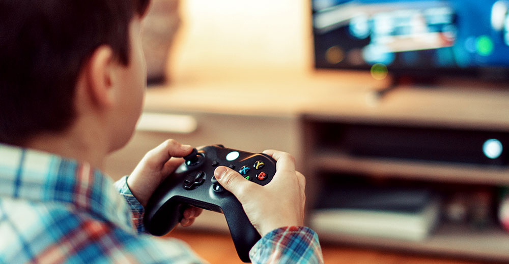

When my friends and I are discussing the difference between games and other forms of media, I always say "Game is the media that can take you to a wonderful place, let you do anything, and live inside of them as well ". Beyond the pixels and code, games are a canvas of experiences. Maybe in the world of videogame, we are the protagonists who have been drawn into a huge conspiracy and seeking a chance of survival; We are the engineer looking for his girlfriend in a creepy spaceship full of monsters; Or we are the mercenaries in a cyberpunk future who have to fight for our lives after an accident. Even the plot and gameplay of these games are fantastic, but after we clear the game, the end credits pop up, everything is over. And even if we open a new save data, the whole world of the game will return to the beginning.
I often ask myself, why does it feel so bittersweet when a game ends? For those hours playing videogame, you weren’t just playing; you were existing in that realm. When the credits roll, it’s like waking up from a dream. A dream so vivid that its emotions linger, making us yearn to go back. And it's true, starting a new save does reset the world, but it never really takes away our lived experiences. Every playthrough, even if it's the same game, feels different because we bring new perspectives and emotions to it each time.
So, the moment when we pick up the controller or sit in front of gaming PC, maybe we are not just playing a game. In other perspectives, we are also embarking on a journey of self-discovery, one digital adventure at a time. And while the in-game world might reset, the growth and memories you gain are yours to keep, forever.

Recent years have witnessed a significant spike in children's screen time, primarily fueled by the allure of video games. With vibrant worlds, challenging puzzles, and social connectivity, it's no wonder kids are drawn into these digital realms. However, when does passion turn into obsession?
A recent survey conducted by 'ChildTech Insights' reveals some startling numbers:
| Age Group | Average Gaming Hours/Week | Percentage Showing Addiction Symptoms |
|---|---|---|
| 6-8 | 10 hours | 15% |
| 9-11 | 15 hours | 20% |
| 12-14 | 20 hours | 25% |
While gaming can offer various cognitive and social benefits, excessive gaming can lead to numerous adverse effects on children's physical health, academic performance, and social interactions.
Parents are encouraged to set limits on screen time, ensuring a balance of physical activity, hobbies, and quality family time. It's crucial to recognize the signs of addiction early and seek professional guidance if necessary.
Remember, moderation is the key. Let's ensure our children enjoy the digital world responsibly, without losing touch with the real one.